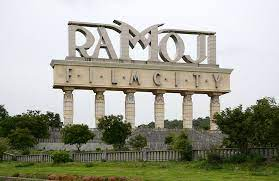
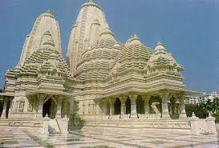
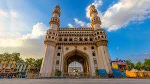

known as the "City of Pearls" and "Cyberabad," is the capital city of the southern Indian state of Telangana. Here's an overview of what makes Hyderabad unique:
Historical Heritage: Hyderabad has a rich history dating back to the Qutb Shahi dynasty and later the Nizams of Hyderabad. The city is dotted with architectural marvels such as the Charminar, a monument built in 1591, and the majestic Golconda Fort, known for its acoustics and diamond mines.
Cultural Fusion: Hyderabad is a melting pot of cultures, with influences from Persian, Mughal, and Telugu traditions. This is reflected in its cuisine, which includes iconic dishes like Hyderabadi biryani, haleem, and kebabs, as well as in its festivals and traditions.
IT Hub: Hyderabad has emerged as a major IT hub in India, earning the moniker "Cyberabad." The city is home to several tech parks, including HITEC City, which houses numerous multinational companies and startups, contributing significantly to the city's economy and employment opportunities.
Education: Hyderabad boasts a thriving educational sector, with prestigious institutions like the University of Hyderabad, Indian School of Business (ISB), and International Institute of Information Technology (IIIT) attracting students from across the country and abroad.
Pearl and Diamond Trade: Historically, Hyderabad was renowned for its pearl and diamond trade, leading to its nickname, the "City of Pearls." While the prominence of these trades has diminished over time, Hyderabad still maintains its reputation for exquisite pearl jewelry.
Film Industry: Hyderabad is a significant center for the Indian film industry, with the Telugu film industry, popularly known as Tollywood, based here. The Ramoji Film City, one of the largest film studio complexes in the world, is located in Hyderabad and attracts filmmakers from around the globe.
Hyderabad Metro: The city boasts a modern transportation system, including the Hyderabad Metro, which connects various parts of the city and offers a convenient mode of travel for residents and visitors alike.
Growth and Urbanization: Hyderabad has witnessed rapid growth and urbanization in recent years, leading to infrastructure development and the expansion of residential and commercial areas. This growth has also brought challenges such as traffic congestion and environmental concerns.
In summary, Hyderabad is a city of contrasts, blending its rich historical heritage with modernity and technological advancement. It's a place where tradition and innovation coexist, making it a vibrant and dynamic metropolis in India.
To Choose PG:
Click Here